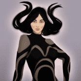
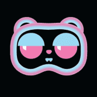
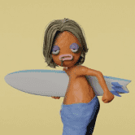
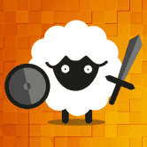

Farmers World Farmers World 是第一个在 NFTs 平台上运行的农场游戏。为自己挑选合适的工具，开发各种资源，购买土地来建造巨大的农场，并享受在农民世界生态系统中工作的农民的迷
FarmersOnlyFi FarmersOnly 在 Harmony 上拥有第一个自动复合保险库！我们有 ViperSwap、SushiSwap、Fuzz.fi 和 PiggyBank 的保险库，而且还会有更多！ 我们是 Harmony 上的第一
FarmHero FarmHero 来到多边形！ 该协议具有独特的 NFT 系列、NFT 农业、收益农业和 2 个内部游戏：拍卖和 fomo。未来，协议中会有更多的功能加入，更有趣！ FarmHero 是一种融
FARMHOUSE GAME FarmHouse Game 合约在合约中每日投资任何金额的 MATIC（最低价）并获得投资收益的机会。 Farm House是最好的乡村农业和城镇建设游戏。农家乐是一款经典的模
 Fatales 一款 10K 全女性收藏品，具有独特的艺术特征。Fatales 是 10,000 个随机生成的各种稀有数字收藏品的集合，这些收藏品以 ERC-721 代币的形式存在于以太坊区块链上
FATExDAO FATExDAO 是一个 100% 由会员经营的亲人类（ESG、多样性、社会责任、营利性企业）。 DAO 的 web 3.0 Dapp FATExDEX 目前已上线（请访问 FATEx.io - 请花点时间熟悉登录页面上的详细信息）
FATExFi FATExDAO 是在治理代币 FATE & FATExFi 下形成的 ESG/CSR 金融科技 DAO，基础层 DOA 治理 dApp： FATExFi 重新格式化了传统的“dex”流动性池、排放奖励模型（通过一些重要的调整
Feeder Finance Feeder Finance 通过简化的用户体验、独特的多样化保险库和多链保险库聚合重新构想了 DeFi 之旅——少想，赚更多。 Feeder Finance 平台将具有独特的简化用户体验，将在无数平台上
Felix Felixball.io 是基于 EOS 的游戏平台。该平台本质上是利润分享，公平游戏始终是首要任务。 Felix 将根据玩家在游戏中挖出的 Felix 币的数量来分配红利。 Felix 构建了世界上第一个区
Ferrum Network Ferrum Network 是开创互操作性 2.0 时代的先行者。 Ferrum Network 的主网节点和相关基础设施由 Quantum Portal 提供支持，将为行业中的每条链带来价值、数据和功能互操作性。利用 Ferrum 网络，任
 Lockdown Lemmings 旅鼠？ 以太坊区块链上的原创、独特、3D 渲染集合。 Lockdown Lemmings 是一个可收藏的 NFT 系列，包含 10,000 只不同的 3D 渲染的可爱毛绒玩具旅鼠，具有不同的毛皮、颜色、道具
Locomotive Finance Locomotive Finance 是一个去中心化的投资平台，通过稳定币存款提供高额利润。 Locomotive 为平台带来了两组参与者：投资者和交易者。投资者将资金存入平台并通过顶级交易员赚取
Lodge Swap The Lodge ( $LODGE )，它是一个新的辉煌和创新的协议。 LODGE 是由社区驱动的公平发布。我们的计划侧重于我们的三重方法：社区、产品和生态系统。 该团队正在孜孜不倦
[Day] Rings [Day] Rings 的第一轮开始于玩家将他的赌注存入空筹码。赌注必须等于或高于 1 Finney (0.001 Ether)。 从他或她的交易 - depositStack() 调用 - 在某个区块 X 中得到确认的那一刻起，
Clam Island 什么是 Clam Island？ Clam Island 将区块链投资游戏化在 3D 岛上，游戏中的角色支持用户完成整个 NFT 和 DeFi 投资流程让 DeFi 变得简单、有趣和有效。该平台引入了 Play-to-Invest 模型
 Claylings Claylings 是一个 4,040 版的生成艺术项目，其美学灵感来自于 Chicken Run、Wallace 等。 Grommit or Neverhood，唤起 90 年代的怀旧情怀。 正在制作的短片 如何获得
Coffin Finance Coffin Finance 将成为 Fantom Opera 上第一个去中心化、资本高效且部分抵押的稳定币协议。 农场质押您的 LP 代币以获得 COFIN 奖励。目前，我们仅支持在 SpookySwap 上创建的 LP 代币。我们也在
 Coin Collect NFTs CoinCollect 是一种在多链上运行的去中心化 NFT 金融协议，可帮助 NFT 交易者、高收益农民、流动性提供者、开发商和 web 3.0 初创公司参与开放的金融市场，没有进入障碍。 CoinCollect
Coinbidex Coinbidex 将 建立自己的区块链和交易所 COINBIDEX 链如果您在 COINBIDEX 链上构建您的 DAPP，您将获得 50% 的 GAS 费奖励Coinbdex 将以最低的费用构建最快的区块
CoinCollect Bronze NFT CoinCollect NFT 可抵押、可交易，并为其所有者提供特殊礼物。 拿起您的 NFT 并开始收集新硬币、空投新硬币或出售/交易您的 NFT。 CoinCollect 是一种在多链上运行的去中心化 NFT
CoinCollect Silver NFT CoinCollect Silver NFT 是中等强大的实用 NFT，具有青铜 NFT 的所有功能，并且比 Starter NFT 强大 15 倍。 白银 NFT 从矿池和空投中获得的收益超过青铜 NFT。 它在白名单上也有更多机
Colonize Mars 购买补给箱 供应箱是 NFT 包，包含数字交易卡。 卡片以殖民地所需的不同车辆、设备、建筑物和宇航员为特色。 使用卡片赚取玛蒂亚代币 Martia Token 是管理火星经济的游
ComethSwap ComethSwap 是一个开放的 DEX，任何人都可以在其中列出 ERC20 兼容对。 为了吸引 Comethswap 的流动性，将激励特定的 DeFi 相关池。 流动性提供者将在没有归属的情况下分配必须⚗️
COMMUNITY MINER 2.0 是什么让这个矿工与众不同？ 很高兴您提出要求！ Community Miner 制定了多项反倾销和反鲸鱼措施，以确保项目的寿命。这些措施包括最大存款，最大提款，以及提款的截
CommunityGaming.io Community Gaming 是一体化的电子竞技竞赛平台，为主要的行业利益相关者提供尖端的基础设施。 通过其无缝的用户体验以及高度可扩展和高效的区块链支付技术，该平台为
Conic Conic Finance 是一个易于使用的平台，可让流动性提供者分散对多个 Curve 池的风险敞口。 Omnipools 为 Conic 提供了便利，Omnipools 将流动性分配给多个 Curve 池中的一项资产。
Convex Finance Convex 允许 Curve.fi 流动性提供者在不锁定 CRV 的情况下赚取交易费用并声称提升 CRV 。 流动性提供者可以轻松获得提升的CRV和流动性挖掘奖励。 如果您想质押 CRV，C